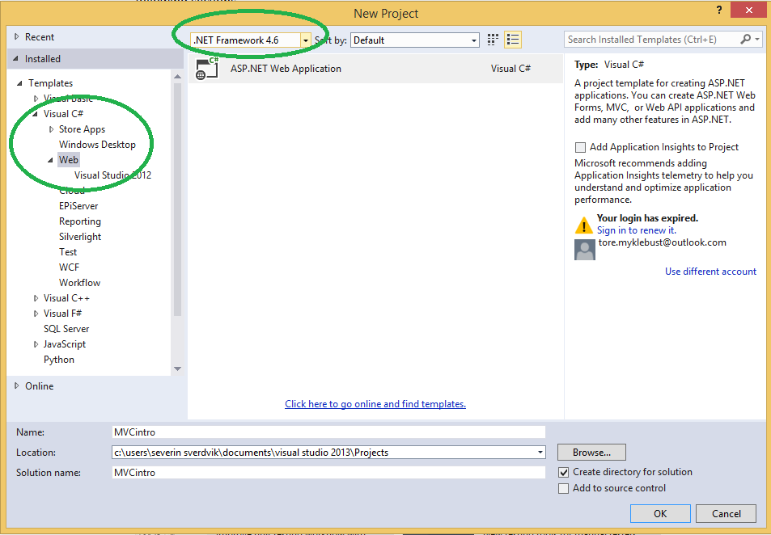

Opprette prosjekt
Åpne Visual Studio og velg:
File => New => Project

Visual C# => Web => ASP.NET Web Application
Velg MVC. Velg vekk host in the cloud.
Velg Add unit tests
Kjøre løsningen
Trykk F5 eller CTRL + F5
F5 kjører løsningen med Visual Studio debugging. Det betyr at dersom koden feiler vil Visual Studio si ifra og vise feilmeldingen på det stedet i koden den oppstod.
CTRL kjører løsningen uten debugging.
Siden skal nå ha åpnet seg og vise innholdet som kommer som standard med prosjektet
 Den observante utvikler vil legge merke til at prosjektet allerede inneholder helt ok CSS. Dette kommer fra frontend-rammeverket Bootstrap som er inkludert i prosjekt-templaten. Vi kan selvfølgelig droppe dette, og skrive vår egen CSS - eller vi kan skrive vår egen CSS i tillegg til Bootstrap. I denne introduksjonen beholder vi det bare som det er.
Den observante utvikler vil legge merke til at prosjektet allerede inneholder helt ok CSS. Dette kommer fra frontend-rammeverket Bootstrap som er inkludert i prosjekt-templaten. Vi kan selvfølgelig droppe dette, og skrive vår egen CSS - eller vi kan skrive vår egen CSS i tillegg til Bootstrap. I denne introduksjonen beholder vi det bare som det er.
Filstruktur
Ta en titt i Solution Explorer som befinner seg på høyre side i Visual Studio. Modellene befinner seg i mappen
Models controllerne ligger i Controllers. Dette er ikke noe krav, men en vanlig måte å strukturere prosjektet sitt på.
Ta en titt på HomeController.cs:
namespace MVCintro.Controllers
{
public class HomeController : Controller
{
public ActionResult Index()
{
return View();
}
public ActionResult About()
{
ViewBag.Message = "Your application description page.";
return View();
}
public ActionResult Contact()
{
ViewBag.Message = "Your contact page.";
return View();
}
}
}
Hver av disse tilsvarer en handling i menyen på siden vår. Når vi går inn på en side, feks http://localhost:<port>/Home/About kalles HomeController.About() som returnerer et View til brukeren.
Vi har ikke spesifisert hvilken View-fil som skal benyttes, men MVC-rammeverket bruker navnet på Controlleren og Actionen (Home og About) til å lete i Views/Home/ etter en fil som heter About.cshtml.
Det er altså et krav at View-filene ligger på riktig sted, med mindre vi spesifiserer eksplisitt hvilket View som skal benyttes (og det er det jo digg å slippe).
Hvis du vil kan du forsøke å endre teksten i ViewBag.Message, kompilere på nytt (F5 eller CTRL + F5), og observere endringen.
Routes
Du har kanskje lagt merke til at http://localhost:<port>/ og http://localhost:<port>/Home/Index fører til samme side.
Dersom Controller ikke er spesifisert ser MVC automatisk etter HomeController.
Utelater man Action kalles automatisk Index().
Global.asax
Legg merke til filen Global.asax. Dette er inngangspunktet til applikasjonen, dvs det som kjøres når applikasjonen startes for første gang. Her kan man kalle metoder man ønsker å kjøre ved oppstart.
Pro tip: For å navigere raskt til å en fil kan man trykke CTRL+T eller CTRL+SHIFT+N (avhengig av hvilke standardinstillinger man har valg for ReSharper) og søke seg frem til fila man vil gå til.
Endre Index.cshtml
Gå til Views/Home/Index.cshtml
Bytt ut alt innholdet med:
<h1>Hei</h1>
<p>Velkommen til min nye fete side.</p>
<p>Klokka er @DateTime.Now.ToLongTimeString()</p>